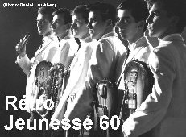
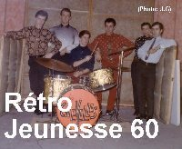

Les Chevelles
Groupe forné de Jean-Pierre Lainé (chanteur), Claude Viel (guitare soliste), Denis Déry (guitare), Jacques Croteaux (guitare et voix), Gilles Arseneault (guitare basse) et Serge Gaboury (batterie). Le groupe remporte un concours d'orchestres à la salle de danse Puff de Québec. Par la suite la formation signent un contrat d'enregistrement avec la maison de disques Niagara.
Pour l'enregistrement du 45 tours, le groupe se compose de Gilles Bertrand (chanteur), Claude Viel (guitare soliste), Denis Déry (guitare et voix), Jacques Gagnon (saxophone) , Gilles Arseneault (guitare basse) et Serge Gaboury (batterie). Suite à la sortie du disque, les Chevelles passent aux émissions de télévison : Allez-4 et Teen-Club. Le groupe se produit par la suite dans les cabarets et les salles de danse de la région de Québec, la formation se dissout en 1969.
Gilles Bertrand, chanteur soliste et interprète de la chanson "Marlyne" est décédé samedi le 21 novembre 2009 à l'âge de 67 ans d'un cancer dont il a perdu la bataille. Son décès a été constaté à 6 hr. A.M. au soin palliatif de l'hôpital Laval à Québec.